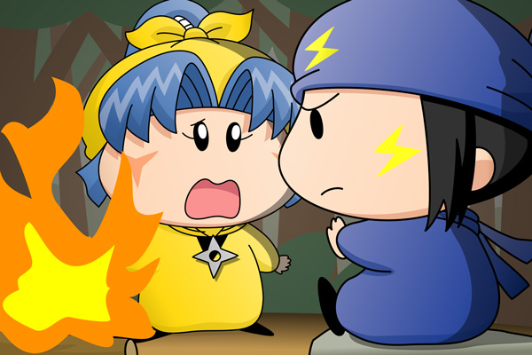

|
ヤマネ＆ネズミ(1)
ネズミ「ヤマネと修行の旅をするのも久しぶりでござるな」
たき火を挟み、向かい合わせにしてネズミとヤマネが座っています。
静かな夜をたき火のぱちぱちという音が少しだけ賑やかにさせていました。
ネズミ「少し見ない間にヤマネもだいぶ腕を上げたでござるな」
ヤマネ「はい、これもヤシチ兄様の修行のおかげでございます」
ヤマネは笑顔でネズミにそう答えました。
いつものようにヤシチの悪口を言われることを覚悟して。
期待に反して何も言ってこないネズミを見てみると、ネズミはたき火に視線を向けたまま何かを考えているようでした。
ヤマネ「ネズミ兄様？
どうかなさいましたか？」
ネズミ「ヤマネ・・・。
ヤマネは妖精忍者の忍属＜にんぞく＞について聞いたことがあるでござるか？
ヤマネ「えっ？」
突然の話題にヤマネは驚きました。
ヤマネ「昔の書物でちらっと見たことならありますが・・・。
でも大昔の言い伝えで、今ではそんなものは・・・」
ネズミ「・・・いいや、忍属は今でも残っているでござる。
火、水、土、風、そして雷。
拙者たちの忍術は先祖代々より受け継がれた雷属性の力。
それゆえ拙者たちの里には雷の忍属の妖精忍者しかいないのでござるよ」
あまりに重大なお話をネズミから告げられ、反応に困るヤマネ。
突然忍属について話し始めたネズミの真意もまた分からずにいました。
ネズミ「同じ忍属の者同士が結ばれることで子孫へ忍属が引き継がれる。
むろん拙者たちも雷の忍属を守る義務があるのでござる」
ここまで聞いてヤマネははっとなり、ネズミの方へ近づいて言いました。

ヤマネ「ヤシチ兄様の忍属はいったい何でございましょう！？」
ネズミ「・・・」
ヤマネ「ネズミ兄様！！答えて欲しいでございます！」
ネズミ「・・・風でござる」
ヤマネ「そんな・・・」
時間が経つにつれてたたき火の音が小さくなっていきます。
ヤマネのすすり泣く音は時間が経っても小さくなることはなく・・・。
さらに数分が経ち、突然ヤマネが立ち上がります。
ヤマネ「私は妖精忍者をやめてヤシチ兄様の元に仕えるでございます。
今すぐヤシチ兄様の元へ・・・」
ネズミ「だめでござる！
そんなことをしたら里に帰れなくなるでござるぞ」
ヤマネ「止めても無駄でございます！」
ネズミ「・・・ヤシチも妖精忍者をやめることになるのでござるよ」
ヤマネ「うっ・・・」
うちわを広げたままヤマネは固まりました。
ヤマネ「それでも私は・・・わ〜〜んっ」
大声で泣きながらヤマネは飛び立ちました。
ネズミ「許せヤマネ・・・」
こういう運命めいたストーリーは私は苦手なのですが、二人が結ばれないとしたら運命以外にないかなと（何とも安直な・・・）。もちろん妖精忍者にこんな深刻な設定はあるはずないので、二人は自然な形で結ばれるというのが私の考えです。皆さんだったらどのようなストーリーを考えますでしょうか？(2008/10/5)
|